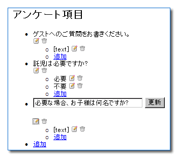

RubyOnRails を使ってみる 【第 4 回】 ActionPack
書いた人: moriq
はじめに
夏休み前のひととき。 夏休みはいっちょ Rails でもやってみようかと思われる方、ようこそです。 仕事で Rails と格闘されている方、普及に努めていらっしゃる方に、心よりのご健闘と感謝を。
今回は ActionPack について取り上げようと思います。
先号は ActionPack について書くつもりにしていたのに休んでしまいました。 今回もなぜか時間がありません。でもこの Rails 熱の高まっている中 (しかも来月は休みだし) 何も書かないのはちょっとなあと思って書いてみました。もちろんこれは予防線を張るためのひどい言い訳です。
さて、ActionPack は非常に広範囲に渡るライブラリで、ちょっとやそっとで語れるものではありません。 ということで今回は、ピンポイントの選択と集中を行って、 みんなが知りたいと思っている (と私が思っている) ことを書いてみました。ヤマを外していたらごめんなさい。
嬉しいことに、Rails を使う人がすごく増えていて、ActionPack についてもいろいろなところで詳細な説明が行われています。 同じようなことを薄く書いても意味がないので、隙間狙いで書いてみました。
お題目は次の通りです。
- ActionPack は何をしてくれるの - 簡単なまとめ
- どのように伝わるの - 流れを理解する
- 最近の Rails
- フォーム要素を Ajax 化する
また、ActionPack のうち、今回扱わない話は次の通り。
- benchmarking
- caching, fragment
- components
- dependencies
- pagination
- streaming
- upload_progress
- verification
- action_view/helper 全般
- partials
- test
…多いね!
ActionPack は何をしてくれるの
ActionPack は何をしてくれるものなのか。
ブラウザからのリクエストを受け取って、それを処理して、レスポンスを返す。これが Web アプリの基本。 例えば http://my.shop.com/store/add_to_cart/123 という URL にリクエストしたとしよう。すると StoreController クラスの add_to_cart メソッドが呼び出される。 このときパラメータ id=123 が一緒に渡される。
add_to_cart は id=123 に対応する商品をカート (買い物かご) に入れる。 そして、続けて買い物できるようにページを作ってレスポンスとして返す。 もちろん、そうなるように add_to_cart を書くことになるわけだけど。
このように URL を解析してアクションメソッドを呼び出してレスポンスを返すことが ActionPack の大事な仕事その一。 この機能は特に ActionController というくくりでまとめられている。 ActionController を構成するファイルは lib/action_controller/ に置かれている。
ActionPack の大事な仕事その二はテンプレートを元にレスポンスを作ること。 このうち、テンプレートを作成するのに役立つ機能が ActionView としてまとめられている。
Rails では ERB で HTML テンプレートを書く。このテンプレートを書きやすくするのが ActionView の仕事。 ERB 以外のテンプレートエンジンでも書けるようにしようという動きがあるけど、本稿ではこれについて触れない (ごめん)。 ActionView のファイルは lib/action_view/ にある。
細かい話をするときりがないけど (test とか caching とか dependencies とかね) MVC のうち View と Controller を司るのが ActionPack。
ジェネレータ
ActionPack を利用する上で、使う頻度が高いジェネレータについて説明します。
script/generate はジェネレータを起動するスクリプトです。ジェネレータのうち、ActionPack に関連するものとして controller, scaffold を取り上げます。 まず、controller ジェネレータについて。
script/generate controllerとすると controller ジェネレータのヘルプが表示されます。引数としてコントローラ名とアクション名 (省略可) を指定します。
controller ジェネレータは app/controllers に Controller クラス、app/views にテンプレートディレクトリを (アクション名を指定すればテンプレートファイルも) 作ってくれます (ちなみに generate view はありません)。
もうひとつ、scaffold ジェネレータについて。
script/generate scaffoldscaffold ジェネレータは model と controller (と view) を作ってくれます。その上、基本的なアクション (いわゆる CRUD) を行える段階までアクションメソッドとテンプレートを用意してくれます。合わせてきれいなスタイルシートも付いてくるので、これだけでも見栄えのするインターフェイスができあがります (まあ、我々には日本語という問題があるので、こんな宣伝文句には煽られないのだけど)。 具体的には、
script/generate scaffold Entryは
script/generate model Entry
script/generate controller Entries list show new editのようなもので (generate scaffold を使うとコントローラ名が複数形になることは気に留めておいたほうがいいでしょう)、これに加え、アクションの定義 (view を持たない index create update destroy も含まれます) とテンプレートの作成も行います。
generate scaffold を使う際には、データベース上でテーブルを作成しておく必要があります。 なぜなら generate scaffold は実際のテーブル情報に基づいてフォームテンプレート (_form.rhtml) を作るからです。 といっても、ジェネレータは後から再実行できるので、不可欠というわけではありません。なお、再実行の際には、既存のファイルを上書きする前に、上書きするか否かをファイルごとに選択できます。
Rails で scaffold と言われるものにはもうひとつあって、 コントローラの中で宣言するもの、具体的には
class WeblogController < ActionController::Base
scaffold :entry
endのように用いるものがあります。 これは実行時に (動的に) アクションを定義する面でジェネレータとは異なりますが、アプリを起動したときに提供される機能としては同じものです。ただ、ジェネレータは実際にソースを書き出してくれるので、以降のカスタマイズが容易です。
ソースを読む方へ。 ジェネレータのソースは railties (gem では rails) の lib/rails_generator にあります。 コントローラの中で宣言するほうの scaffold は action_controller/scaffolding.rb にあります。
セッション (session)
Web アプリケーションの要であるセッションについて説明します。
セッション (session) は Web アプリケーションを作るうえで欠かせない要素です。 セッションは同一性を保持する仕組みです。セッションを使うと次のアクションにデータを渡せます。 具体的には、ログイン状態の維持、買い物かごの維持、といったことに使われます。
一般的に Web アプリケーションのセッションは Cookie を使って実現されています。 Rails のセッションは cgi.rb のセッション管理機能を元に実装されていますが、これも Cookie を使います。
セッションの id を URL にパラメータとして載せれば Cookie なしにセッションを実現できますが、 セッションを認証の仕掛けに用いる場合には穴が開く恐れがあります。
また SSL を通すときには secure Cookie を使う必要があるかもしれません。
実装の観点から見れば、セッションは Marshal されたオブジェクト (Hash) をファイル (やメモリ) に格納したり復元したりする仕組みです。 Marshal されたオブジェクトは id (16進数32文字) に対応付けられます。 Cookie の中には id だけ保存されます。
Rails では、セッションのファイル (やメモリ) への格納と復元については、自動化されています。 Rails ユーザから見ると、アクションの中でセッションを利用するには session というアクセサ (あるいは @session というインスタンス変数) を Hash のように読み書きするだけです。 また、テンプレートの中では @session としてアクセスできます (1.9.0 以降はアクセサが定義されているので session でも ok)。
フラッシュ (flash)
セッションを利用した機能として flash (フラッシュ) があります。 flash は Rails 特有の用語なんでしょうか。ほかのフレームワークでは聞いたことがありません。 flash は次のアクションに (それも特に次のアクションに限って) 任意のオブジェクトを受け渡す仕組みです。Macromedia Flash とは何の関係もありません。
flash の主な用途はメッセージの伝達です。あるアクションで失敗した旨をメッセージ文字列としてフラッシュに保存してから redirect_to すれば、redirect 先のアクションでフラッシュからメッセージを取り出せるというわけです。 たいてい flash に格納されるのはこのようなメッセージとしての単純な文字列です (flash は全体で見れば Hash であって、あるキーに対する値としてメッセージを設定する)。
flash はセッションから見れば単にひとつのキー “flash” とそれに対応する値 (FlashHash) です。
flash はアクションの中ではアクセサ flash を通してアクセスでき、これを Hash として読み書きできます。 また、テンプレートの中では @flash としてアクセスできます (1.9.0 以降はアクセサが定義されているので flash でも ok)。
どのように伝わるの - 流れを理解する
この章は ActionPack のソースを読む話。
フレームワークを使うんだから詳細は別にいいという向きもあるかもしれないけど、 どういう仕組みになっているか知っておくことは大切だと思う。 特に Rails のような柔軟なフレームワークでは、使いこなす上でも仕組みを理解することは大切になってくるはず。
特にわかりにくいのは、プロセスの始めの部分。ようするに、 ブラウザからのアクセスがどのように伝わるのかという、とっかかりが難しい。 一通り Ruby の文法と CGI や Web の仕組みを理解していても、ActionPack の実装を読むのは難しい。
まず、ファイルの構成を見ておこう。
ファイルの多くは lib/action_controller/ にあるけど、 dispatcher.rb は railties (gems でいうと rails) に含まれるし、active_support が提供する機能も使われている。 適宜参照してください。
URL を解析してアクションメソッドを呼び出してレスポンスを返すという流れでいくと、 URL の解析は routing.rb メソッドの呼び出しは dispatcher.rb で行われる。
あと、 リクエスト request.rb とレスポンス response.rb があるんだけど、 これらは CGI に限らない抽象的なクラスになっている。 CGI としてのリクエストとレスポンスは cgi_process.rb にある。 それと cgi.rb を拡張する cgi_ext/ も見ることになる。
ファイルの構成は以上。
道標としてこれから見ていく流れをまとめておく。
- リクエストとレスポンスを生成
- リクエストを解析して (recognize!)、コントローラを得る
- コントローラでアクションを実行 (process)
- テンプレートを元にレスポンスを設定 (render)
- レスポンスを出力
ではスタート。
CGI, FastCGI, mod_ruby を通してアクセスすると、public/dispatch.{cgi,fcgi,rb} が最初に実行されるファイルになる。 詳細を省くと、最終的には
require "dispatcher"
Dispatcher.dispatchが呼ばれる。
script/server で Webrick を使う場合は
DispatchServlet.dispatchが呼ばれる。
dispatch
ここでは Dispatcher.dispatch をみていくことにする。定義は dispatcher.rb にある。
def dispatch(cgi = CGI.new, session_options = ActionController::CgiRequest::DEFAULT_SESSION_OPTIONS, output = $stdout)
begin
request, response = ActionController::CgiRequest.new(cgi, session_options), ActionController::CgiResponse.new(cgi)
prepare_application
ActionController::Routing::Routes.recognize!(request).process(request, response).out(output)
rescue Object => exception
ActionController::Base.process_with_exception(request, response, exception).out(output)
ensure
reset_after_dispatch
end
endここでは cgi という CGI オブジェクトを元に (これは cgi.rb の CGI オブジェクトだ)、request (ActionController::CgiRequest), response (ActionController::CgiResponse) を作っている。 そして、
ActionController::Routing::Routes.recognize!(request).process(request, response).out(output)これからこの一行を解読してみよう。
Routes.recognize!
ActionController::Routing::Routes は routing.rb にある。
class RouteSet #:nodoc:
def recognize(request)
string_path = request.path
string_path.chomp! if string_path[0] == ?/
path = string_path.split '/'
path.shift
hash = recognize_path(path)
return recognition_failed(request) unless hash && hash['controller']
controller = hash['controller']
hash['controller'] = controller.controller_path
request.path_parameters = hash
controller.new
end
alias :recognize! :recognize
end
Routes = RouteSet.new引用した最後の行にあるように、Routes は RouteSet のインスタンス。
ええと、詳細は後でじっくり追ってくれたらいいので (でもやるなら暇なときがいいと思うよ)、とりあえず recognize! (alias recognize) の戻り値が controller.new つまりコントローラであることに注目して。ここで作られるコントローラは URL を解析した結果として得られるコントローラ名をクラス名としたもの。つまり recognize は config/routes.rb を元に解析を行っているわけ。
process
dispatch に戻ると recognize! の戻り値に .process(request, response) だから、今度は base.rb を見よう (もちろん action_controller の base.rb)。
def process(request, response, method = :perform_action, *arguments) #:nodoc:
initialize_template_class(response)
assign_shortcuts(request, response)
initialize_current_url
@action_name = params[:action] || 'index'
log_processing unless logger.nil?
send(method, *arguments)
close_session
return @response
end詳細は飛ばして send に注目。process のパラメータを見ると method = :perform_action だから perform_action の定義を見よう。
perform_action
def perform_action
if action_methods.include?(action_name) || action_methods.include?('method_missing')
send(action_name)
render unless performed?
elsif template_exists? && template_public?
render
else
raise UnknownAction, "No action responded to #{action_name}", caller
end
endここで action_name はアクセサであることに注意。さっきの process の中で send の前に
@action_name = params[:action] || 'index'としている。この値が action_name として得られる。これはようするに URL を解析した結果として得られるアクション名だ (params の詳細ははしょった)。
というわけで、perform_action では、アクション名に対応するメソッドがあればそれを呼び出し (send)、メソッドがなくてもテンプレートがあればそのテンプレートを出力し (render)、だめなら UnknownAction 例外を飛ばす。
response.out
process の戻り値は @response 。これは process の引数の response と同じ (assign_shortcuts を参照)。response の中身は render とか redirect_to といったメソッドを呼んだときに設定されることになる。
その後は、dispatch に戻って process(request, response).out(output) なので、response の out メソッドが呼ばれる。 引数 output のデフォルト値は $stdout。 cgi_process.rb を見よう。
class CgiResponse < AbstractResponse #:nodoc:
def out(output = $stdout)
convert_content_type!(@headers)
output.binmode if output.respond_to?(:binmode)
output.sync = false if output.respond_to?(:sync=)
begin
output.write(@cgi.header(@headers))
if @cgi.send(:env_table)['REQUEST_METHOD'] == 'HEAD'
return
elsif @body.respond_to?(:call)
@body.call(self)
else
output.write(@body)
end
output.flush if output.respond_to?(:flush)
rescue Errno::EPIPE => e
# lost connection to the FCGI process -- ignore the output, then
end
endまず、ヘッダの調整とか output (= $stdout) の調整があって、
output.write(@cgi.header(@headers))ヘッダを出力する。 それから、普通は output.write(@body) に進む。単に @body を出力する。 REQUEST_METHOD が HEAD のときは @body を出力しない (ので、ヘッダだけ出力することになる)。 @body.call(self) が使われるのは、ええと、@body が Proc オブジェクトのときなんだね。具体的には、send_file でファイルを細切れに流すときに使われる (streaming.rb)。
params
params はアクションを書くときにもよく使うので見ておこうか。
params はアクセサで、@params = request.parameters と設定される (assign_shortcuts を参照)。 request.parameters は request.rb:
def parameters
@parameters ||= request_parameters.merge(query_parameters).merge(path_parameters).with_indifferent_access
endquery_parameters は CGI のいわゆるクエリパラメータ (? 以降 ; や & で区切られるやつね)。
path_parameters はさっき見た recognize の中で
request.path_parameters = hashとして設定される、URL を解析した結果として渡されるパラメータ。主に :controller, :action, :id のことだ。
with_indifferent_access なるメソッドはどこからくるのかというと lib/active_support/core_ext/hash/indifferent_access.rb (うわあ)。 これはハッシュのキーが Symbol ならキーを文字列に置き換える新たなハッシュ (HashWithIndifferentAccess) を作る。
落穂拾い
かなりはしょったけど、データの流れていく経路が見えたと思う。
例外処理については dispatch メソッドと rescue.rb を読むことになるね。 config/routes.rb の処理については、正直私はついてけないんだけど、猛者は挑戦すべし! というか、教えてください。
なお、こういう内側の実装は変更されることが多いので、バージョンが異なるときは適宜読み替えてください。 あまりにも変わってしまって記事が役立たずになっていなければだけど。
最近の Rails
本稿は Rails 0.13.1 の段階で書いている。 Rails 1.0 のリリースに向けてとりまとめが進んでいる。
Rails year で測ると、Rails にはすでに長い歴史がある。 昔書かれたドキュメントは、最近の仕様からすると古い書き方になっているかもしれない。 ここでは特に目に付く書き方の違いについて、どのように対応すればいいのか確認しておくことにしよう。
より簡潔な表現
前章で触れたように、 @params が HashWithIndifferentAccess になったことで、キーとしての Symbol は文字列として扱われるようになった。 また、@params にはアクセサが定義されているため、
@params["id"]これを
params[:id]と書けるようになった。 現時点ではドキュメント中でどちらの表記も用いられているが、少なくともドキュメント上は後者にまとめられていくと思う。
id に関連して、もうひとつ。 url_for の引数として :id をキーにして指定するとき、 値として渡す ActiveRecord オブジェクトに .id を付けて数値として渡す必要はなく、 ActiveRecord オブジェクトのままでもよくなった。
url_for は link_to や form_tag などの引数の処理に用いられているのだが、 例えば
<%= link_to "Edit", :action => "edit", :id => @entry.id %>これを
<%= link_to "Edit", :action => "edit", :id => @entry %>と書けるようになった。 初めてこれを見たときは違和感があったが、たった3文字でもタイプ数が減ると楽だ。
この機能は、ActiveRecord の CHANGELOG によれば、 ActiveRecord::Base#to_param
# Enables Active Record objects to be used as URL parameters in Action Pack automatically.
alias_method :to_param, :idによるもので、1.9.0 以降で使えるようになった。
以上のことは、互換性があるので、昔の書き方でも特に問題は生じない。
非推奨 (deprecated) になったメソッド
最近の Rails では推奨されなくなったメソッドについて確認しておきたい。
ライブラリの deprecated_*.rb というのが、これにあたる。 多くのサンプルはまだ非推奨メソッドを用いた書き方になっているし、廃止を宣言しているわけではないので、知らない方もおられるかもしれない。この機会に確認しておきたい。
ActiveRecord と ActionPack にはいくつか deprecated というファイルがある。
- active_record/
- deprecated_associations.rb
- deprecated_finders.rb
- action_controller/
- deprecated_assertions.rb
- deprecated_renders_and_redirects.rb
実際にこれらのファイルを確認してみると、その多くは少し引数のとり方を変えて、新しい (推奨される) メソッドを呼んであるだけであることがわかる。
deprecated_renders_and_redirects.rb について、新旧の例が ActionPack の CHANGELOG に載っている:
- redirect_to_path, redirect_to_url は推奨されなくなりました。代わりに redirect_to を使います。
- render_* は推奨されなくなりました。代わりに render を使います。
| BEFORE | AFTER |
|---|---|
| render_with_layout “weblog/show”, “200 OK”, “layouts/dialog” | render :action => “show”, :layout => “dialog” |
| render_without_layout “weblog/show” | render :action => “show”, :layout => false |
| render_action “error”, “404 Not Found” | render :action => “error”, :status => “404 Not Found” |
| render_template “xml.div(‘stuff’)”, “200 OK”, :rxml | render :inline => “xml.div(‘stuff’)”, :type => :rxml |
| render_text “hello world!” | render :text => “hello world!” |
| render_partial_collection “person”, @people, nil, :a => 1 | render :partial => “person”, :collection => @people, :locals => { :a => 1 } |
ただし、非推奨にはなっても警告が出ることもなく使える状態にある。 慌てて対応しなければならないものではないと思う。
非推奨になってしまったメソッドのほうが、新しく定義された汎用のメソッドより書きやすいこともある。 例えば、これは ActiveRecord での例になるが、find_all を find :all で書き直すと、条件は :conditions => で書かないといけないのでかなり面倒だ。
find(:all, :conditions => ["user_name = ?", user_name])
find_all(["user_name = ?", user_name])| find_by_, find_all_by_ に慣れ親しんでいる開発者もいるだろう (ただし find_{all_}by_* は find_{all | first}, find :{all,first} の置き換えであり、オプションが Hash 形式なら deprecated ではない)。 |
find_all_by_user_name(user_name)find については、最近のオプションの指定方法を確認しておくと良いだろう。
Rails 1.0 に向けてどのような方針になっているのか調べられていないのだが、 非推奨側 (deprecated_*.rb) に移されたメソッドも、互換性の問題から長期的にサポートせざるを得ないのではないだろうか。これは私の希望でもあるけど。
フォーム要素を Ajax 化する
ここでは、既存のフォーム要素を Ajax 化する例を取り上げる。
Rails が紹介されるとき、特長のひとつとして、Ajax のサポートを挙げられることが多くなってきたように思う。
Ajax をサポートするライブラリは javascript_helper として ActionView に組み込まれている。
Rails での Ajax は JavaScript で書かれた Prototype というライブラリを用いる。 動作を理解するためには JavaScript 側も見る必要があり、Ruby のコードだけ追っても仕掛けはわかりにくい。 具体的な置き換えを見ながら、使い方を把握してみよう。
Rails で Ajax を使うのは簡単だ。
link_to, form の置き換え
端的には、link_to を link_to_remote に、form_tag を form_remote_tag に置き換えるだけでいい。 ここでは省略させていただく。これらの使い方は次に示す『動的な form の生成』にも出てくる。
動的な form の生成
動的にフォームを作ると良いパターンとしてリスト項目の編集がある。 ここではサンプルとして、 アンケートフォームを生成するシステムのうち、設問項目の編集画面を採り上げる。
@survey.questions の要素である question を編集するインターフェイスを考える。
ここで、 アンケートの編集画面を表示するアクションを edit_enq、 リスト項目の編集画面を表示するアクションを edit_question、 リスト項目を更新するアクションを update_question とする。
最も単純な画面設計は、編集ボタンを押したときに編集ページ (edit_question) に遷移し、そこで更新すると (update_question) リスト表示に戻る (edit_enq) というものだろう。これは scaffold で簡易に作ることができるインターフェイスと同じものになる。 しかし、編集する項目が少ないときに編集ページを用意すると、遷移がわずらわしく感じられる。 そこで、リスト表示と編集フォームの表示を同じ画面で行うことを考える。 
(icon 画像は Rails Day 2005 の Sheets から拝借した)
def edit_enq
@survey = Survey.find(@params["id"])
end
def edit_question
@question = Question.find(@params["id"])
@survey = @question.survey
render_action "edit_enq"
end
def update_question
@question = Question.find(@params["id"])
@question.attributes = @params["question"]
@question.save
redirect_to :action=>"show_enq", :id=>@question.survey
endedit_question で edit_enq.rhtml テンプレートを使うように指定していることに注意。
- edit_enq.rhtml:
<ul>
<% @survey.questions.each {|question| -%>
<li>
<% if controller.action_name == "edit_question" && question == @question -%>
<%= form_tag :action=>"update_question", :id=>question %>
<%= text_field "question", "content", "size"=>80 %>
<%= submit_tag "更新" %>
</form>
<% else -%>
<%=h question.content %>
<%= link_to image_tag("/images/edit.gif", :border=>0), :action=>"edit_question", :id=>question %>
<% end -%>
</li>
<% } -%>
</ul>このように controller.action_name を元にして、アクションの違いでテンプレートを一部変更することができる。
さて、これは期待通りに動くが、編集時に画面全体を書き換えてしまうのが気になる。 変更が必要な部分だけ書き換えることができれば、レスポンスの向上が見込める。 というわけで、前置きが長くなったが、ここでは Ajax を用いて、動的に書き換えるようにしてみよう。
- edit_enq.rhtml (with Ajax):
<%= javascript_include_tag "prototype" %>
<ul>
<% @survey.questions.each {|question| -%>
<li>
<div id="question_<%= question.id %>"><%=h question.content %></div>
<%= link_to_remote image_tag("/images/edit.gif", :border=>0), :url=>{:action=>"edit_question", :id=>question}, :update=>"question_#{question.id}" %>
</li>
<% } -%>
</ul>まず前提として、Rails で Ajax サポートメソッドを使うときには、テンプレートに Prototype ライブラリを組み込む必要がある。 そのためには javascript_include_tag を用いればよい。 必要な JavaScript ファイルは public/javascripts に置くことになるが、prototype.js は始めから置かれているはずだ。
ライブラリが準備できたところで、中身にとりかかろう。 まず、書き換える範囲を div で囲み id 属性を設定しておく。 そして link_to を link_to_remote に変更する。 その際 :action, :id の引数は :url の値としてくるみ、書き換える div の id 属性を :update の値に設定する。
def edit_question
@question = Question.find(@params["id"])
@survey = @question.survey
render_text @template.render_partial("edit_question", "question"=>@question)
endedit_question では render を変更する。ここでは partial を用いてフォームを作ることにする。
- _edit_question.rhtml:
<%= form_remote_tag :url=>{:action=>"update_question", :id=>question}, :update=>"question_#{question.id}" %>
<% @question = question -%>
<%= text_field "question", "content", "size"=>80 %>
<%= submit_tag "更新" %>
</form>partial のファイル名は頭に _ が付くことに注意。また、render_partial で指定したパラメータはローカル変数としてテンプレートに渡されるので、text_field の object 名を元に value を設定するためにはインスタンス変数に代入し直す必要がある。
def update_question
@question = Question.find(@params["id"])
@question.attributes = @params["question"]
@question.save
render_text @question.content
endupdate_question では redirect_to を render_text に変更する。 更新ボタンを押すと form_remote_tag の :update で指定された div のテキストとして render_text に指定した値が使われる。
このように、Rails なら Ajax を簡単に組み込める。
文字コードの問題
…とすんなりことが運べば苦労はない。実際には、日本語環境では UTF-8 を使わない限り文字コードの問題が出てくる。 一般に、Ajax を通してやり取りされるデータの文字コードは UTF-8 だ (ブラウザの実装による)。 なので、先のサンプルを Shift_JIS のテンプレートや EUC として扱う DB と組み合わせると文字化けする。
文字コードは出力時に一括して処理することもできるが、Ajax を使う箇所だけで対応するなら、nkf や iconv を用いて変換する必要がある。 例えば、DB とテンプレートが Shift_JIS のとき、先のサンプルは次のようにする必要がある (注意: ここでは iconv の例外を考慮していない)。
require "iconv"
def toutf8(text)
Iconv.iconv("UTF-8", "Shift_JIS", text).first
end
private :toutf8
def tosjis(text)
Iconv.iconv("Shift_JIS", "UTF-8", text).first
end
private :tosjis
def edit_question
@question = Question.find(@params["id"])
@survey = @question.survey
render_text toutf8(@template.render_partial("edit_question", "question"=>@question))
end
def update_question
@question = Question.find(@params["id"])
@params["question"]["content"].replace(tosjis(@params["question"]["content"]))
@question.attributes = @params["question"]
@question.save
render_text toutf8(@question.content)
endAjax リファレンス
今回
- observer
- auto complete
については採り上げなかった。
Rails で Ajax を使う上で参考になるページを載せておく。
- Ajax on Rails
- Ajax on Rails - 日本語訳
- Prototype - JavaScript Framework
- Ruby on Rails のマニュアル - JavaScriptHelper
Rails 関連情報
Rails に関係するニュースをまとめてみます。
Rails を扱う日本語サイトの リンク集 が Rails 日本語 Wiki にあります。
先号の News でもお伝えしましたが、 pragprog の Dave Thomas と Rails の開発者 David Heinemeier Hansson による Rails 本 Agile Web Development with Rails が Web 上で販売されています。 PDF 版もあります。
また、Rails Day 2005 では、Rails Day の入賞作品が公開されています。
著者について
もりきゅうは ミッタシステム のプログラマです。
著者の連絡先は moriq@moriq.com です。